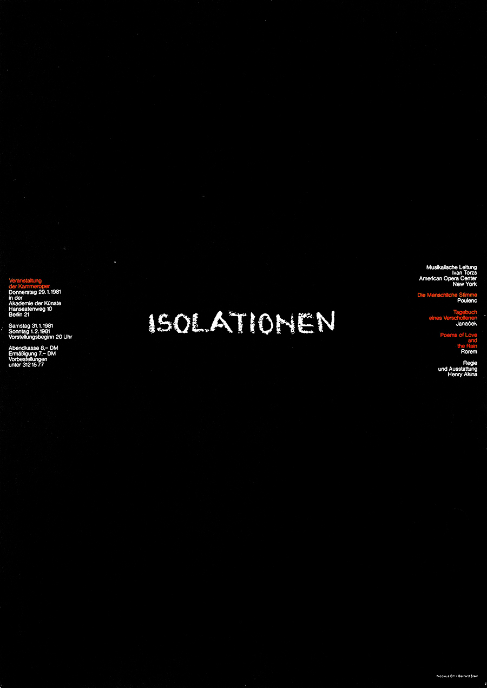
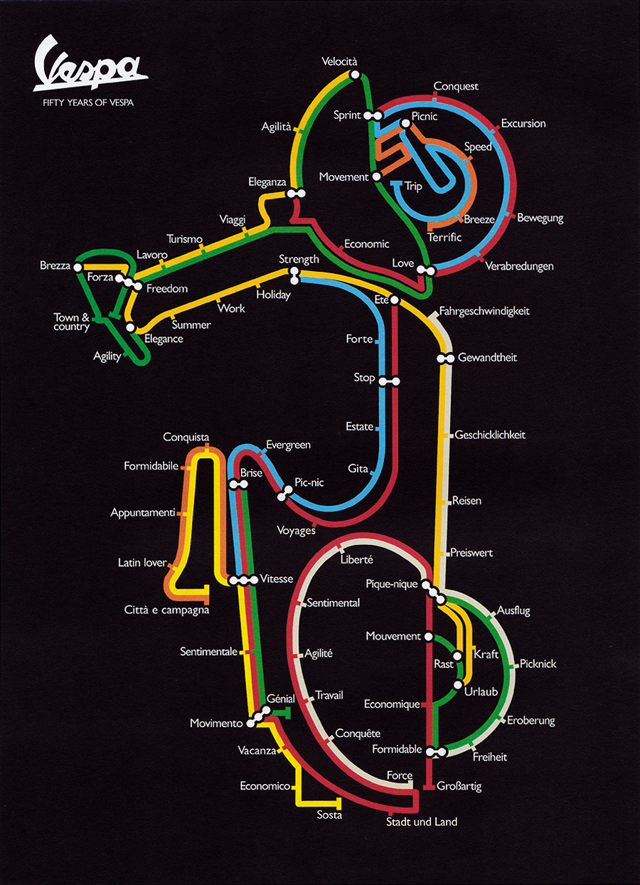
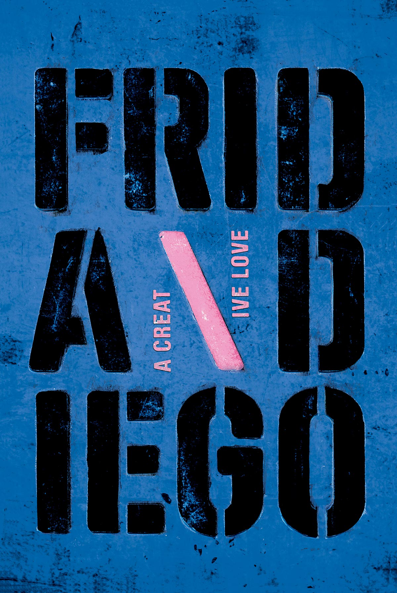

Cartell del Berliner Kammeroper. El disseny comunica perfectament el missatge i la idea de solitud es posa en relleu pel buit del fons negre.
Bernard Stein1981


Un pòster de celebració dels 50 anys de Vespa, basat en l'esquema de l'Mapa Subterrani de Londres d'Harry Back de 1930, per suggerir les interminables rutes i viatges per viatjar amb una Vespa.
Italo Lupi1996
Dissenyat per l'AGI (Alliance Graphique Internationale). Inspirat en l'obra de Kahlo i Rivera, un joc de paraules amb els seus noms, creant la frase A Creative Love.
Phelippe Apeloig2008
